Trebond Inmobiliaria
1. Enlaces Oficiales de Acceso a la Plataforma
La plataforma está optimizada para acceso universal desde computadoras de escritorio, tablets y teléfonos móviles:
| Módulo / Pantalla | URL de Acceso Directo | Función y Destinatarios |
|---|---|---|
| Portal Público Principal | https://trebond-frontend.vercel.app | Buscador de inmuebles, catálogo con filtros, tasaciones y contacto. |
| Panel Central de Administración | /admin | Dashboard ejecutivo, métricas de ocupación, cobranza y accesos directos. |
| Caja y Arqueo Diario | /admin/caja | Libro de ingresos y egresos (ARS/USD), cheques y botón de Cierre de Caja con arqueo. |
| Cuentas Corrientes | /admin/cuenta-corriente | Conceptos devengados mensuales a cobrar/pagar, imputación manual y descarga de PDF. |
| Liquidaciones a Dueños | /admin/liquidaciones | Cálculo transparente de alquiler bruto, comisión, retenciones y emisión con comprobante. |
| Gestión y Vinculación de Inmuebles | /admin/propiedades | Catálogo maestro, sindicación a portales y vinculación guiada de propiedades a propietarios. |
| Contratos de Alquiler | /admin/contratos | Contratos activos, prórrogas, depósitos en garantía y firma digital. |
| Postulaciones y Scoring | /admin/solicitudes | Revisión de DNI, recibos de sueldo, scoring crediticio y aprobación a inquilino. |
| Mantenimiento y Reparaciones | /admin/mantenimiento | Tickets de incidentes, proveedores asignados, presupuestos y gastos imputados. |
| Facturación Electrónica AFIP | /admin/facturacion | Emisión de Facturas A/B/C con CAE oficial, QR RG 5003 y descarga PDF. |
| CRM Comercial (Kanban) | /admin/crm | Embudo comercial en 8 etapas, seguimiento de prospectos, llamadas y reservas. |
| Portal Inquilino (Mobile & Web) | /portal/pagos | Pago de alquiler, saldo consolidado, historial de imputaciones, contratos y tickets. |
| Portal Propietario | /dashboard/owner | Inmuebles propios, contratos vigentes, liquidaciones mensuales y balances netos. |
2. Credenciales de Prueba Precargadas
Para auditar los diferentes permisos y vistas del sistema, utilice las siguientes cuentas operativas precargadas:
| Rol | Correo Electrónico | Contraseña | Alcance y Privilegios |
|---|---|---|---|
| Administrador | admin@trebond.com.ar (o admin@trebond.com) |
admin123 |
Control total: Cierre de Caja, Imputación en Cta Cte, Liquidaciones, Vinculación de Inmuebles, Facturación AFIP y CRM. |
| Propietario | marcelo.rodriguez@owner.com |
admin123 |
Acceso a sus inmuebles asociados, firma digital biométrica con OTP y descarga de liquidaciones netas. |
| Inquilino | carlos@tenant.com |
admin123 |
Consulta de cuotas pendientes, verificación de conceptos imputados por admin, firma biométrica y comprobantes PDF. |
3. Dashboard General y Métricas Ejecutivas /admin
La consola de control de Trebond proporciona una visión panorámica de la operación inmobiliaria en tiempo real:
Ocupación Tasa de Ocupación
Porcentaje de inmuebles alquilados versus disponibles en cartera, con alertas de contratos próximos a vencer en menos de 60 días.
Cobranzas Eficiencia de Cobro
Cánones locativos cobrados del 1 al 10 de cada mes, cálculo automático de mora sobre cuotas adeudadas y proyección de ingresos.
Tesorería Saldo en Caja Unificado
Posición consolidada de efectivo físico y cuentas bancarias en pesos argentinos y dólares estadounidenses.
Leads Actividad Comercial
Nuevos prospectos ingresados desde el portal web, visitas agendadas por los agentes y reservas pendientes de firma.
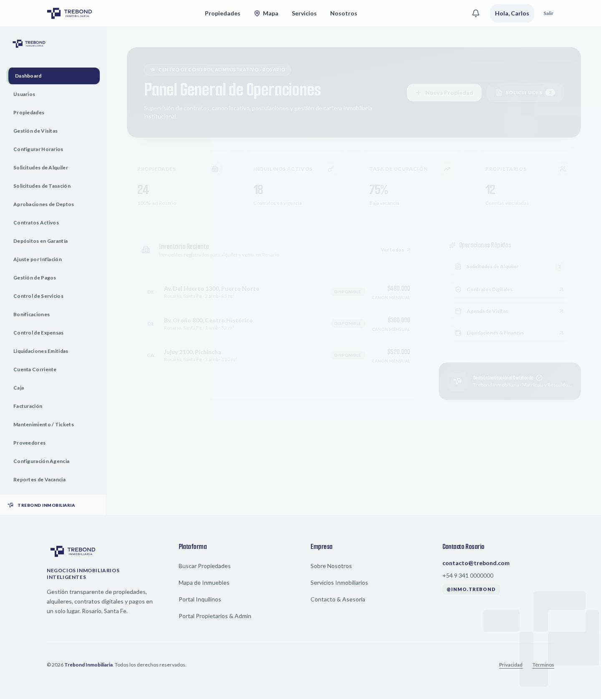
4. Caja y Cierre de Caja Diario (Arqueo) /admin/caja
El módulo de Caja gestiona el flujo de tesorería diaria de la inmobiliaria en múltiples monedas y medios de cobro. Cuenta con un sistema estricto de Cierre de Caja y Arqueo Diario:
/admin/caja, en la barra superior junto al selector de fecha y filtros, encontrará el botón destacado "Cierre de Caja" con ícono de candado.
- Saldo Inicial / Apertura: Saldo con el que arrancó la jornada.
- Ingresos del Día: Sumatoria de cobros de alquileres, expensas y señas.
- Egresos del Día: Pagos a proveedores, gastos de mantenimiento y retiros.
- Saldo Teórico del Sistema: Monto que matemáticamente debería existir en caja.
- Si la diferencia es
$0,00, la caja se marca como Cuadrada (Exacta). - Si hay diferencia positiva o negativa, se registra como Sobrante o Faltante con justificación obligatoria.
CajaCierre con fecha, hora, saldo teórico, saldo real, responsable del arqueo y observaciones, impidiendo modificaciones retroactivas de los movimientos de esa jornada.
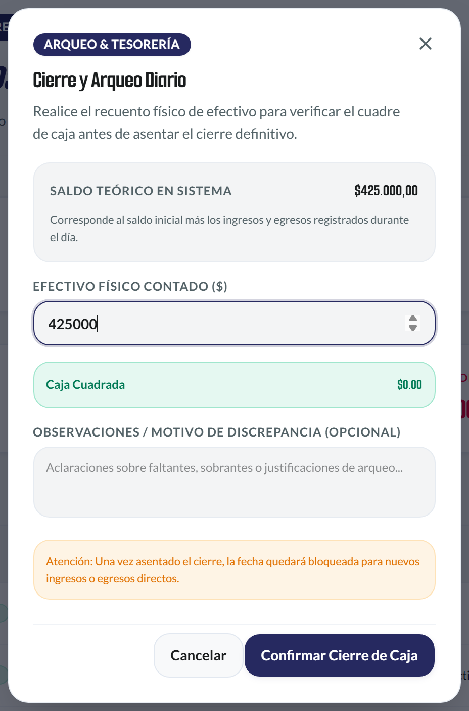
5. Cuentas Corrientes, Devengados y Comprobantes /admin/cuenta-corriente
Este módulo centraliza el historial financiero de cada cliente (inquilino o propietario). Ha sido renovado para ofrecer visualización transparente de los conceptos devengados mensuales y permitir imputaciones directas:
A. Pestañas de Desglose de Conceptos Mensuales
Para resolver la confusión entre lo facturado, lo cobrado y lo pendiente, la interfaz cuenta con pestañas de filtro rápido:
- Pestaña "Todos": Muestra la cronología completa de movimientos ordenados por fecha con saldo continuo acumulado.
- Pestaña "A Cobrar (Débitos Devengados)": Filtra únicamente las obligaciones devengadas en el mes (cánones locativos, expensas ordinarias, ajustes por IPC/ICL e intereses por mora). Permite saber con precisión qué debe pagar el inquilino.
- Pestaña "A Pagar / Créditos": Agrupa los pagos recibidos, transferencias bancarias y abonos a favor del cliente.
B. Trazabilidad por Badges de Origen
Cada movimiento en la tabla cuenta con una etiqueta de color que certifica su origen:
- Automático · Contrato Generado automáticamente por el devengamiento mensual de un contrato de locación activo.
- Expensas Imputado a partir de la liquidación de expensas del edificio o consorcio.
- Carga Manual Ajuste, reintegro o concepto extraordinario imputado manualmente por el administrador.
C. Imputación Manual de Conceptos Paso a Paso
¿Los conceptos se cargan desde la solapa de Cuenta Corriente? Sí. Además de los devengamientos automáticos de contratos, se habilitó el botón directo "Imputar Concepto":
/admin/cuenta-corriente.
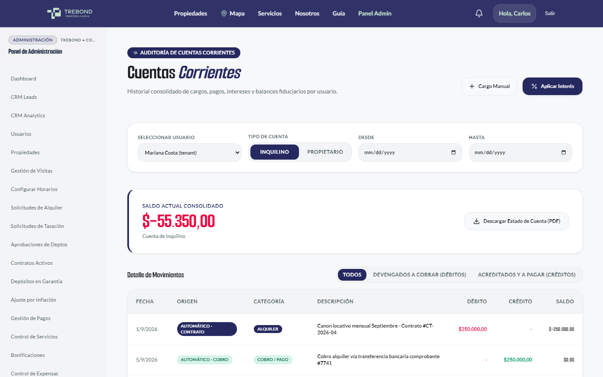
D. Estado de Cuenta Corriente en PDF con Branding Oficial
Al hacer clic en "Descargar Estado de Cuenta (PDF)", el sistema emite el documento oficial adaptado a la identidad corporativa de Trebond:
- Paleta Oficial Trebond: Cabecera institucional en Azul Marino (
#262960) y detalles en Verde Menta (#C4E0CE) con isotipo vectorial nítido. - Datos Institucionales: Correo oficial
contacto@trebond.com.ary sitio webwww.trebond.com.ar. - Traducción Completa al Español: Las categorías técnicas se muestran en lenguaje claro para el cliente (ej. Gasto / Expensa en lugar de "expense", e Interés por mora en lugar de "interest").
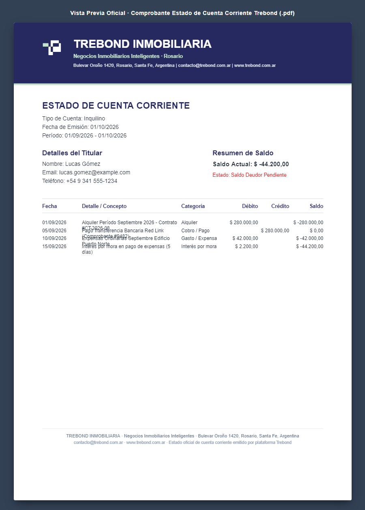
6. Liquidaciones a Propietarios y Cálculo Neto /admin/liquidaciones
El módulo de liquidaciones rinde cuentas mensuales al dueño de cada propiedad administrada de forma transparente y matemática:
/admin/liquidaciones, al presionar "Emitir Liquidación", se abre el modal EmitirLiquidacionModal. El sistema detecta el contrato vigente del inmueble, el monto cobrado al inquilino en el período y calcula automáticamente los honorarios y retenciones.
/dashboard/owner), visualiza el desglose exacto con la fecha de pago y el botón para descargar el comprobante en PDF.
7. Vinculación de Propiedades a Propietarios /admin/propiedades
¿Cómo asociar una propiedad a un propietario? Para que una propiedad pueda alquilarse, tener contratos vigentes y generar liquidaciones mensuales, es obligatorio que esté vinculada a su titular:
/admin/propiedades, la tabla de inmuebles cuenta con la columna "Propietario". Si la propiedad no tiene dueño asignado, se muestra el botón "Vincular Propietario" en color ámbar.
- Buscar Propietario Existente: Escriba el nombre, apellido, DNI o correo para seleccionarlo de la lista de usuarios con rol de Propietario.
- Crear Nuevo Propietario en el Momento: Si el titular aún no está registrado, complete sus datos básicos (Nombre, DNI, Email, Teléfono) y el sistema creará la cuenta y la vinculará al inmueble en un solo paso.
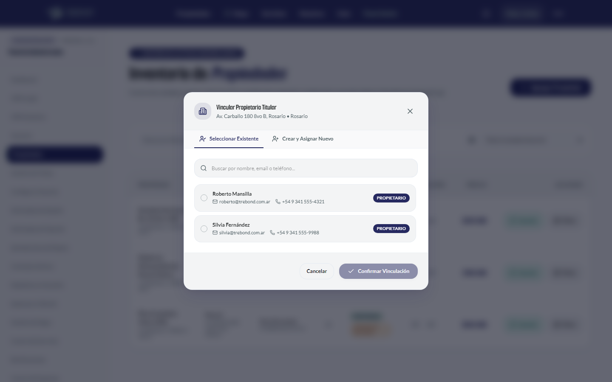
8. Contratos de Alquiler e Indexación IPC/ICL /admin/contratos
Administración jurídica y financiera de todos los contratos locativos celebrados en Trebond:
/admin/indexacion monitorea mensualmente los coeficientes oficiales del Banco Central (BCRA) e INDEC. Al llegar la fecha de actualización contractual (trimestral, semestral o anual), calcula el nuevo valor de alquiler y emite notificaciones automáticas por correo electrónico al inquilino y propietario.
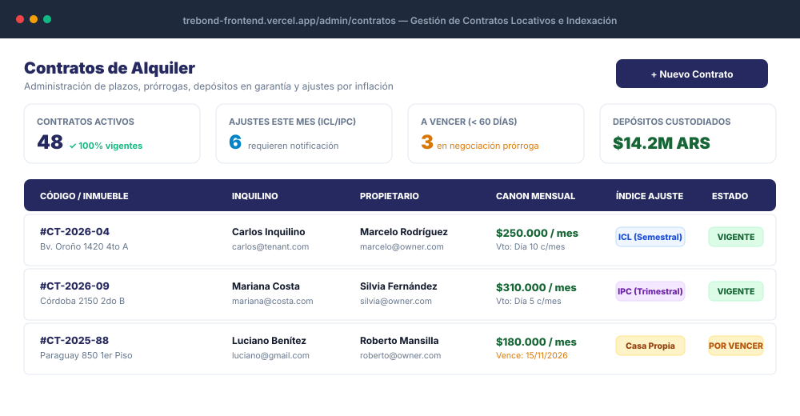
9. Postulaciones, Documentación y Scoring /admin/solicitudes
Mesa de entradas digital para procesar a los interesados en alquilar propiedades:
Scoring Calificación Crediticia
Evaluación automática de solvencia: validación de recibos de sueldo, verificación ante BCRA Situación 1 y relación cuota/ingreso (tope máximo del 30-35%).
1-Click Conversión Directa a Inquilino
Al hacer clic en "Aprobar y Convertir en Inquilino", el postulante adquiere las credenciales de acceso para su portal móvil sin reingresar datos.
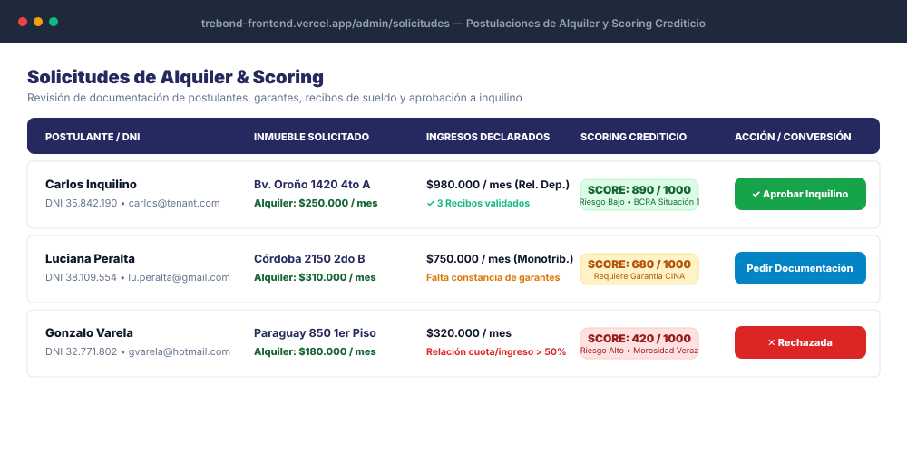
10. Mantenimiento, Reparaciones y Proveedores /admin/mantenimiento
Gestión operativa de incidentes técnicos en los inmuebles bajo administración:
/admin/proveedores (gasistas matriculados, plomeros, cerrajeros) y despacha la orden de trabajo con un clic.
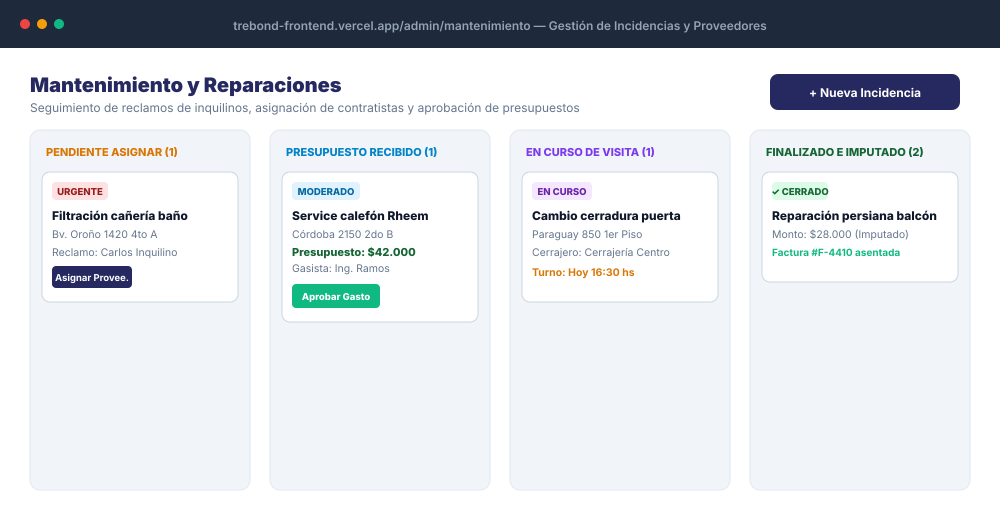
11. Facturación Electrónica AFIP Oficial (CAE & QR) /admin/facturacion
Emisión y almacenamiento de comprobantes fiscales respaldatorios integrados con Web Services oficiales de AFIP (WSFE):
- Facturas A, B y C: Soporte para locaciones comerciales y residenciales con discriminación de alícuotas de IVA o régimen de Monotributo.
- CAE Oficial Inalterable: Obtención de Código de Autorización Electrónico en 2 segundos con fecha de vencimiento legal.
- Código QR RG 5003/2021: Generación automática de QR normativo escaneable por inspectores o clientes con la app móvil de AFIP.
12. Depósitos en Garantía y Custodia de Fondos /admin/depositos
Administración y custodia transparente de los fondos de garantía exigidos al inicio de la relación locativa:
- Registro por Moneda: Custodia en Dólares Estadounidenses en billete físico (sellados y numerados) o Pesos Argentinos equivalentes al último mes de alquiler.
- Acta de Recepción y Reintegro: Generación de comprobante de custodia firmado digitalmente. Al finalizar el contrato y tras la inspección de check-out, el sistema calcula el saldo a devolver deduciendo facturas de servicios pendientes si las hubiere.
13. CRM Inmobiliario y Pipeline Comercial /admin/crm
Embudo de conversión comercial con vista Kanban para optimizar el cierre de ventas y alquileres:
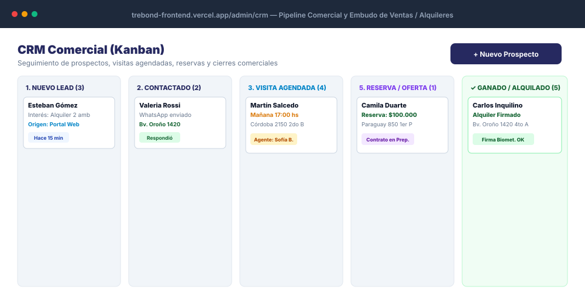
14. Sindicación Multi-Portal: ZonaProp y ArgenProp /admin/propiedades
Distribución automatizada del catálogo de inmuebles a los principales portales inmobiliarios del país:
ZonaProp Sincronización Automática
Publica y actualiza precios, descripción, fotos en alta resolución y estado de disponibilidad en ZonaProp con un solo clic.
ArgenProp Sincronización Paralela
Distribuye la ficha técnica a ArgenProp de forma independiente, garantizando que fallas de un portal no interrumpan al otro.
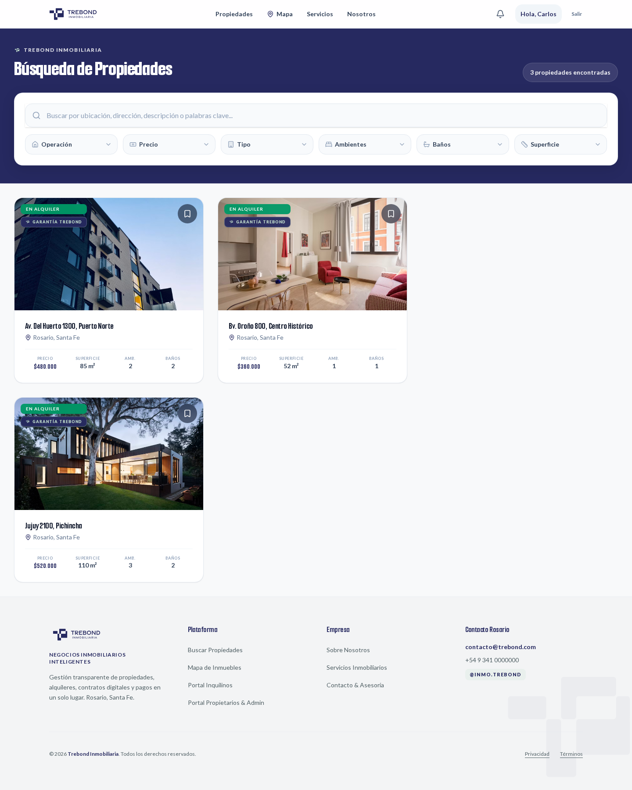
15. Firma Digital con Validación Biométrica Facial y OTP /portal/contratos
Seguridad jurídica bancaria para la firma de contratos de locación y reservas sin necesidad de acudir físicamente a la oficina:
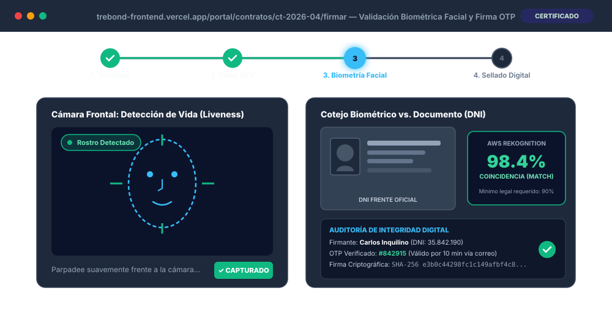
16. Paso a Paso: Verificación Cruzada de Imputaciones (Admin ➔ Usuario)
¿Cómo verificar que cuando se imputa un cobro o gasto a un inquilino/dueño, realmente le aparezca reflejado al loguearse con su cuenta? Siga este procedimiento exacto de auditoría cruzada:
- Inicie sesión como Administrador (
admin@trebond.com.ar/admin123). - Vaya a /admin/cuenta-corriente.
- En el selector superior, elija al inquilino de prueba: Carlos Inquilino (
carlos@tenant.com). - Haga clic en el botón "Imputar Concepto".
- Cargue un cargo de prueba (ej: Tipo: Débito | Categoría: Reparación | Descripción: Arreglo cerradura principal | Monto: $25.000).
- Presione "Confirmar Imputación". Observe cómo el Saldo Actual Consolidado aumenta de inmediato en $25.000.
- Acceda a https://trebond-frontend.vercel.app/login.
- Ingrese las credenciales del inquilino:
Email:carlos@tenant.com
Contraseña:admin123
/portal/pagos o /portal/cuenta-corriente), verifique:
- Saldo Total a Pagar: La tarjeta principal muestra exactamente el saldo recalculado con los $25.000 agregados.
- Tabla de Movimientos: Aparece una fila con la fecha de hoy, descripción "Arreglo cerradura principal", categoría
Gasto / Expensay el badge Carga Manual. - Descarga de PDF: Si el inquilino presiona "Descargar Estado de Cuenta (PDF)", el comprobante generado contiene el nuevo débito asentado con el diseño Trebond.
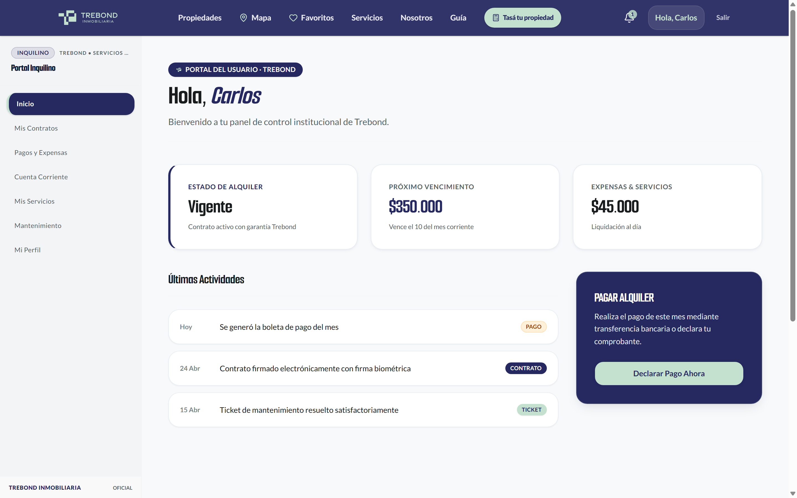
carlos@tenant.com. Refleja instantáneamente los cargos, expensas y conceptos imputados por la administración.
17. Entorno de Simulación y Pruebas Rápidas de Punta a Punta
¿Cómo crear un nuevo usuario para poder simular todo de cero?
Para evitar tener que cargar manualmente inquilinos, propietarios, inmuebles y contratos desde formularios separados cuando se desea auditar una funcionalidad, el sistema dispone del Módulo de Simulación / Test Seeder:
POST /admin/test-simulation/seed.
- Un Inquilino de prueba nuevo (con DNI y teléfono válidos).
- Un Propietario de prueba nuevo con datos bancarios asignados.
- Una Propiedad en alquiler ya vinculada a ese propietario.
- Un Contrato de alquiler activo por 24 meses con valor de canon locativo estipulado.
- Movimientos devengados en cuenta corriente y una Liquidación pendiente de emisión.
18. Portales de Inquilino y Propietario Mobile-First
Experiencia de usuario táctil diseñada específicamente para teléfonos móviles:
- Barra de Navegación Inferior (Bottom Nav): Accesos rápidos con el pulgar para Inicio, Pagos, Contratos, Arreglos y Perfil.
- Cajón Lateral Deslizable (Drawer): Menú táctil accesible desde cualquier sección sin saturar la pantalla.
- Tarjetas Adaptables de Cuotas: Vencimientos y saldos optimizados para pantallas pequeñas.
- Descarga en 1 Toque: Acceso a Facturas AFIP oficiales y Estados de Cuenta en PDF listos para enviar por WhatsApp.
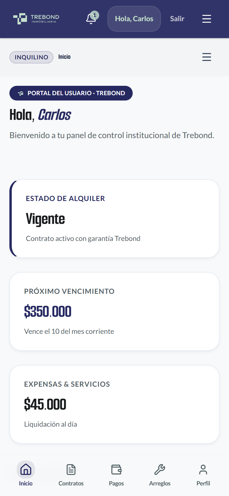
19. Experiencia Pública y Navegación Adaptativa por Rol
Se realizaron mejoras integrales en la web pública para acelerar la conversión de clientes y adaptar la navegación según el tipo de usuario autenticado:
A. Página "Nosotros": Sección Breve y CTA Superior /nosotros
La presentación institucional de Trebond se sintetizó para una lectura ágil, elevando el Call to Action (CTA) principal y los canales de contacto directo (WhatsApp, Teléfono, Email institucional contacto@trebond.com.ar y Dirección en Rosario) a la parte superior de la página, evitando que el usuario deba scrollear hasta el pie de página para contactar a la inmobiliaria.
B. Barra de Navegación Contextual por Rol (Header)
Para evitar fricciones y botones innecesarios, la barra superior detecta automáticamente el perfil del usuario activo:
- Modo Visitante / Cliente: Muestra los botones de conversión "Tasa tu propiedad" y la lista de "Favoritos" guardados.
- Modo Administrador / Staff: Los accesos a "Tasa tu propiedad" y "Favoritos" se ocultan automáticamente, desplegando en su lugar los accesos directos al Panel de Administración, Caja, Cuentas Corrientes y Métricas del sistema.
C. Página "Servicios": Flujo Directo sin Redundancias /servicios
Se depuró la sección de servicios inmobiliarios (Venta, Alquiler, Tasaciones, Asesoría Legal y Administración de Propiedades), removiendo bloques repetitivos sobre atención en Rosario y unificando el botón de acción hacia la consulta inmediata.
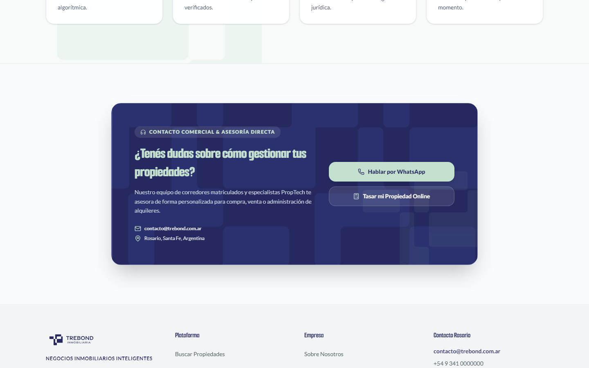
D. Accesos Guiados para Comprador y Vendedor
Se incorporaron tarjetas de acceso rápido diferenciadas para separar el camino de quien busca comprar o alquilar del titular que desea tasar y comercializar su inmueble en Trebond.
20. Paso a Paso: Guía de Prueba E2E Recomendada (7 Minutos)
Para comprobar la excelencia operativa del sistema de punta a punta, recomendamos realizar este circuito de validación:
/admin/propiedades, verifique que la unidad tenga asignado a su propietario mediante el modal "Vincular Propietario".
/portal/contratos, complete la captura de selfie con detección de liveness y firme con su clave OTP de 6 dígitos.
/admin/caja registre el cobro del alquiler. Al finalizar la jornada, presione "Cierre de Caja" y complete el arqueo físico.
/admin/cuenta-corriente compruebe el balance consolidado, filtre los conceptos devengados a cobrar/pagar y descargue el PDF oficial Trebond.
/admin/liquidaciones emita la liquidación mensual: compruebe el desglose de comisión y verifique que el propietario pueda visualizar su neto en /dashboard/owner.
carlos@tenant.com) y compruebe que todos los pagos y cargos imputados se reflejan inmediatamente en su portal móvil.